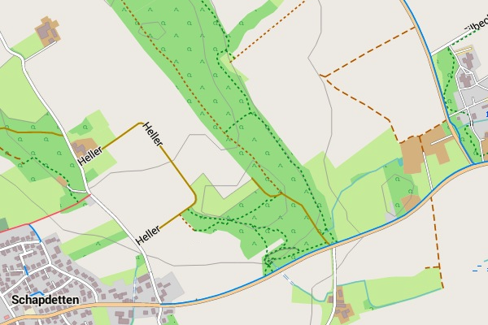
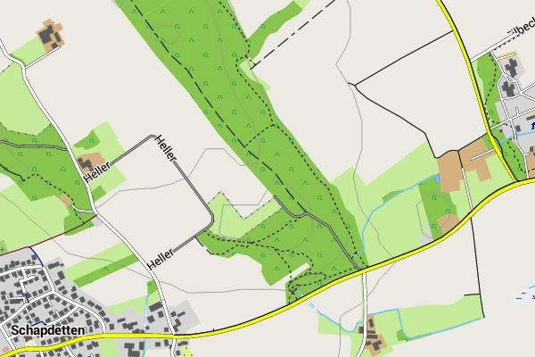

To view the Freizeitkarte maps correctly, a suitable design (theme) is to install and to configure in your maps app. If the design of the Freizeitkarte maps is not installed or enabled, the representation will then deviate strongly from the samples given on this website and many map elements are missing.
The (standard-) design "freizeitkarte":

The design uses bright colors and is designed for general use.
The high-contrast design "fzk-outdoor-contrast":

The design uses bold colors and is designed for "outdoor" use.
Tips concerning theme download:
- click on the Netbook Icon in the PC browser: the design (theme) will be downloaded onto your personal computer
- click on the Locus Map Icon in the Android browser: the design (theme) will be downloaded into Locus Map
- if you have loaded a map direct into "Locus Map", then the design "freizeitkarte" is already available
| ← | Design "freizeitkarte" 0.2 MB |
→ | ||
| ← | Design "fzk-outdoor-contrast" 0.2 MB |
→ |